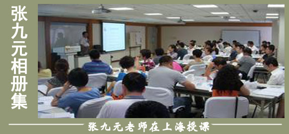

中国企业的创新思维和创新管理
张九元老师
来源：中高层管理技能修炼 点击:125次
职业生涯：
38年的职业生涯是这样度过的：6年政府公务员，8年大型国企中层管理者，4年小型国企法人代表，3年高校理论研究者，17年咨询公司顾问。
讲师主讲课程及著作：
主要演讲和内训专题有《简约管理》系列、《稳健经营》、《企业运营和管理中的经济学思维》《高效管理沟通》、《高中层管理技能提升之道》、《管理者角色认知和定位》《领导艺术与管理智慧》、《创新思维和创新管理》《国学智慧与领导力》、《国学与商道》《中国企业的创新思维和创新管理》等。 代表作有《整合经营》、《虚拟经营》、《特色经营》、《永续经营》等。《简约管理》、《稳健经营》出版在即。
课程简介：
21 世纪我国企业所处的大环境可以概括为市场化、全球化、信息化和知识经济的兴起。新环境、新形势对我国企业既是一种机遇,更是一种挑战。强化管理，不断进行管理创新已成为企业在竞争中制胜的根本保证。但从总体看,我国企业管理的创新工作还远远不能适应形势发展的需要,企业管理迫切需要进一步创新。
目前正是我国实现经济体制转变和经济增长方式转变的关键时期。实现两个转变必然要求企业管理进一步创新。现在我国经济已经走出短缺奔向“过剩”，经济增长方式也正由粗放型向集约型转变，这就要求企业必须把提高产品质量、改善产品结构、节能降耗、提高附加值和增加经济效益放在重要位置。因此，经济增长方式的转变也要求企业管理必须创新。
企业管理创新的领域和内容管理创新需要合适的切入点。管理创新只有在关键的领域进行改革与突破，才能取得最佳效果。当前，企业的竞争主要是围绕培育和形成核心竞争力来展开。培育和形成核心竞争力必须适应企业外部的环境因素。
思想观念的陈旧和落后是企业管理创新的最大障碍。许多企业领导还没有形成现代企业管理的意识，没有认识到现代管理模式对企业效益的巨大作用。因此,企业领导要切实认识到管理创新在当前经济竞争形势下的重要性和紧迫性，树立“科学管理—兴国之道”的思想，在此认识的基础上，更新我国企业的经营理念和战略布置，增强集约化经营意识，从战略的高度去推动企业的管理创新。
构建创新文化,形成良好的管理创新氛围文化的力量是巨大的。宗教为什么能用一种近于松散的管理模式，绵延几千年，靠的就是文化渗透。企业要实现管理创新,也需要靠文化渗透，需要建立一个健康向上、同心同德、生生不息的企业文化。完善企业创新机制，形成强大的创新动力，设计创新文化礼仪以及创新文化网络，宣传创新的价值观念并以此感染员工。
学习目的：
通过学习本课程，可以使学员认识到“创新解决问题”对于经营管理的重要性。从而在经营管理中自觉运用创新思维，解决实际问题。
通过讲授创新思维的原理和方法，使学员快速提高创新解决问题的能力，从而提高工作效率，使工作少走弯路。
本课程可以为学员提供思考问题的方法，指出解决问题的捷径，能够为学员服务的机构增效。学员学后就能化繁为简、以简驭繁，做到创新解决问题，轻轻松松做管理。使学员既能从概念和原理上得以提升，又可以在具体技能和方法上有所改善。
课程对象：
企业中高层管理者
培训课时：
标准课程两天(12小时)
课程提纲：
一、企业管理需要创新思维
1、思维的是人的第一资源
2、思维的创新
3、创新问题的界定
4、创新思维的特征
5、创造力无穷无尽
二、为什么需要创新思维
1、形势的发展
2、竞争的加剧
3、工作的需要
4、效益的逼迫
5、没有创新就没有前途
6、可以赢得和保持竞争优势
三、如何培养创新思维
1、非创新问题与创新问题
2、问题的确定与界定
3、创新思维方式
4、防患于未然
5、养成创新习惯
6、经常进行创新实践
四、争做创新人才
1、创新人才特征
2、人人都与创新有关
3、善于打破思维定势
4、学会使用和创新工具
五、抓好创新教育
1、创新是一个民族的自强的根本
2、传统与现代的衔接
3、多问“好不好”，少问“象不象”
4、将创新教育贯穿于人的一生
六、搞好创新学习
1、创新是可以学会的
2、从已有的创新案例中学习
3、向身边的创新人才学习
4、从自己的得失中学习
5、把创新学习作为组织目标
七、创新地解决理念问题
1、理念的创新是行动的先导
2、善于从传统中汲取营养
3、敢于颠覆传统观念
4、不要哗众取宠的制造理念
5、与时俱进的理念创造
八、创新地解决战略问题
1、战略不能抄袭
2、做大做强的困惑
3、加法减法的运用
4、企业本来没模式
5、别把战略当做秀
九、创新地解决人力资源问题
1、为什么叫人力资源
2、真正的人性化是什么
3、围绕人性化管理人力资源
4、人力资源管理的五字真言
十、创新地解决日常管理问题
1、管理其实并不复杂
2、管理解决的就是两个问题
3、简约管理的实践意义
4、简约管理的要点
十一、创新地解决工作效率问题
1、工作效率首先体现在个体上
2、无拘束思考3、寻找因果关系
4、寻找解决方案
5、个人解决问题的方式
十二、创新地解决团队效能问题
1、激发群体智慧
2、群体有效解决问题的途径
3、创新环境的营造
4、群体决策真正涵义
5、保持团队的持续创造力
十三、构建创新文化
1、向宗教学习文化渗透
2、营造创新文化氛围
3、构建创新文化网络
4、设计创新文化礼仪
5、建立创新文化制度
6、树立创新文化典型
总结：根据培训现场情况和学员反馈做出
说明：
1、案例穿插讲解，不再单独列出。
2、等提纲通过后，再提供相应PPT;
3、留时间回答学员问题。